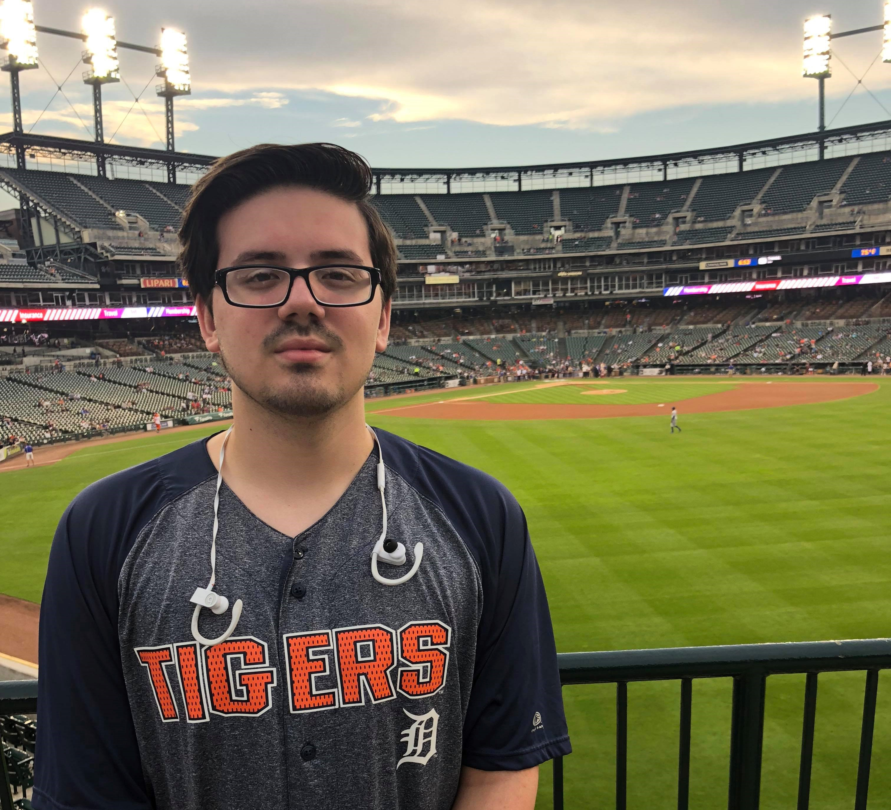

What I do outside of work

Sports
Most of my time away from work is spent doing something related to sports. Whether it is watching them, playing them, researching them, I love interacting with sports in any way I can.
Favorite sport: Baseball
Video Games
Growing up, I played a lot of video games so I still have a soft spot for them. I don't play them anywhere near as much as I used to but sometimes it's nice to pick up a controller and play for a little while.
Favorite video game: The Last of Us
Travel
More recently, I have found a love for travel. I'm kind of a history geek so seeing historical places and cities is awesome. As of now, I've only traveled domestically but I hope to go abroad as soon as possible!